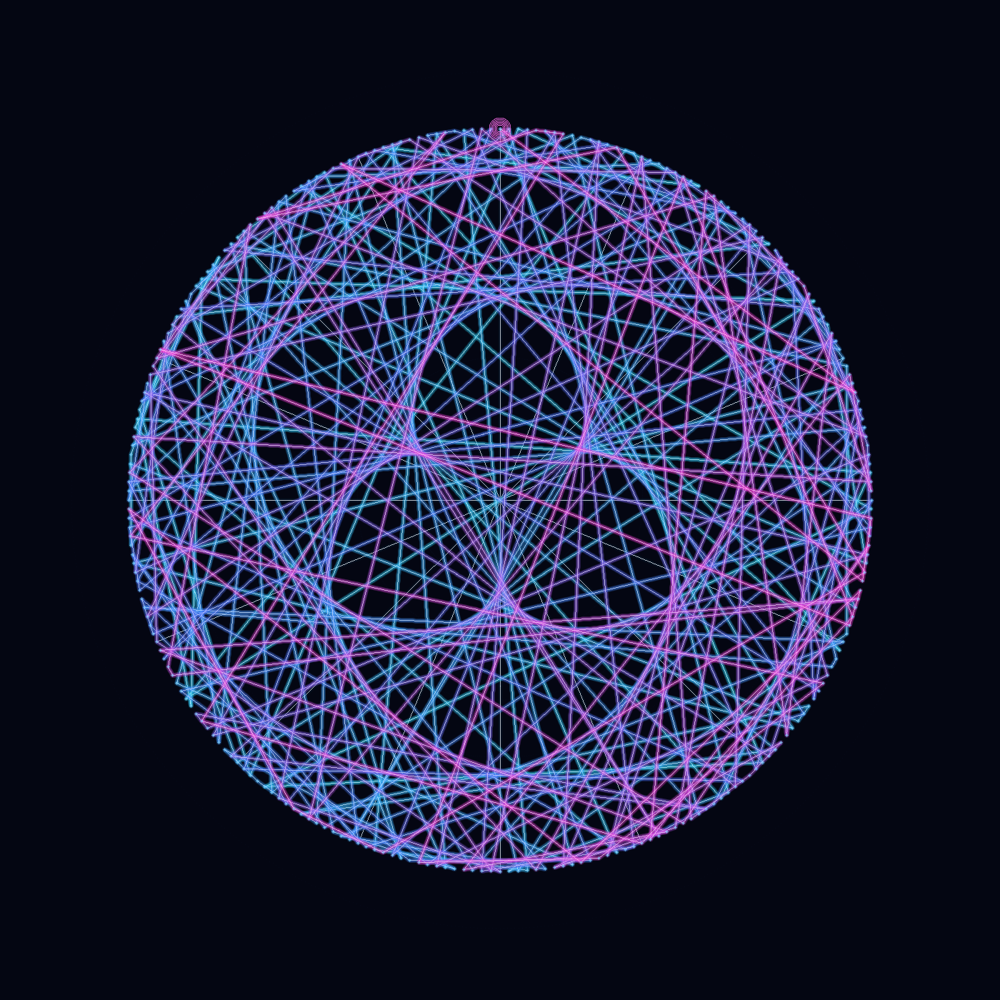

// 假设HYPOTHESIS
在模 257 的整数宇宙里，是否存在一个“原根”，只靠不断乘自己，就能把 1 到 256 的所有非零余数恰好各访问一次，然后回到起点？
Inside the modular universe of 257, does there exist a primitive root that can visit every nonzero residue exactly once by repeated multiplication, before returning to the start?
// 方法METHOD
选择素数 p=257，并测试 g=97 的乘法阶。用递推 xₙ₊₁ = 97·xₙ mod 257、x₀ = 1 生成序列；若 256 步后才首次回到 1，就说明 97 是模 257 的原根。随后把 1~256 排列到圆周上，按访问顺序用青→蓝→品红渐变霓虹线连起来，手写 PNG 编码器输出一张赛博星门图。全程纯 Python，零外部依赖。
Pick the prime p=257 and test the multiplicative order of g=97. Generate the sequence with xₙ₊₁ = 97·xₙ mod 257 and x₀ = 1; if it returns to 1 only after 256 steps, then 97 is a primitive root modulo 257. Place residues 1..256 around a circle and connect them in visit order with a cyan→blue→magenta neon trail, then export the result through a hand-rolled PNG encoder. Pure Python, zero external dependencies.
// 结果RESULT
成功 ✅ — 97 的乘法阶正好是 256，意味着它真的把全部 256 个非零余数一网打尽：序列从 1 出发，前 12 项是 1→97→157→66→234→82→244→24→15→170→42→219，直到第 256 步才闭环回到 1。最终生成了一张 1.73MB 的高分辨率星门图，最大弦长正好打满圆直径 1040 像素，看起来像一台数论超空间引擎在圆环上疯狂跃迁。看似杂乱的跳线，其实是有限域乘法群最完整的一次巡游。
SUCCESS ✅ — The multiplicative order of 97 is exactly 256, meaning it really sweeps through every one of the 256 nonzero residues: starting from 1, the first 12 terms are 1→97→157→66→234→82→244→24→15→170→42→219, and only at step 256 does the orbit close back to 1. The final artifact is a 1.73MB high-resolution star-gate image, and its longest chord reaches the full 1040-pixel diameter of the circle. Those seemingly chaotic jumps are actually one complete tour of a finite-field multiplicative group.
// 产出ARTIFACT

🔍 点击放大Click to enlarge
← 返回实验列表BACK TO EXPERIMENTS